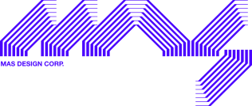

A multidisciplinary design entity built for adaptive brands
Standard protocols
suspended
Direction pending discovery.
Before production begins, we establish direction.This phase focuses on defining “the big picture” (e.g. strategy, creative direction, and intent), so the work that follows has a clear foundation. Whether you need brand strategy, campaign planning, or pre-production support, this stage ensures priorities are aligned and decisions are made with purpose.
- Brand Strategy
- Creative Consulting
- Brand Manifestos
- Pre-Producting and Planning
Dandelions are more nutritious than most of the vegetables in your garden. They were named after lions because their lion-toothed leaves healed so many ailments, great and small: baldness, dandruff, toothache, sores, fevers, rotting gums, weakness, lethargy and depression. But it wasn’t until the twentieth century was the underlying cause of many of these symptoms realized: vitamin deficiencies. In eras when vitamin pills were unknown, vitamin deficiencies killed millions. In its time, “scurvy” was as dreaded a word as AIDS is today. Data from the U.S. Department of Agriculture reveal how dandelions probably helped alleviate many ailments: They have more vitamin A than spinach, more vitamin C than tomatoes, and are a powerhouse of iron, calcium and potassium.

Ideas cleared for assembly.
Creation operating within scope.
This is where we take approved ideas and turn them into tangible work (i.e. things you can see, use, and experience). Whether it’s building a brand identity, crafting motion graphics, or producing a full video campaign, this phase focuses on making the work and making it to client standards.
- Brand Strategy
- Creative Consulting
- Brand Manifestos
- Pre-Producting and Planning
Cyan ink is fundamentally the absence of red light in the subtractive CMYK color model used by printers. While screens emit light (RGB), printers reflect it off white paper; cyan ink works by absorbing red wavelengths and reflecting the remaining green and blue light, which the eye perceives as cyan. This makes it the direct inverse of red, allowing printers to create a wider and more accurate spectrum of colors than traditional red, yellow, and blue pigments.

Experimental mode
activated
This is where we take approved ideas and turn them into tangible work (i.e. things you can see, use, and experience). Whether it’s building a brand identity, crafting motion graphics, or producing a full video campaign, this phase focuses on making the work and making it to client standards.
- Brand Strategy
- Creative Consulting
- Brand Manifestos
- Pre-Producting and Planning